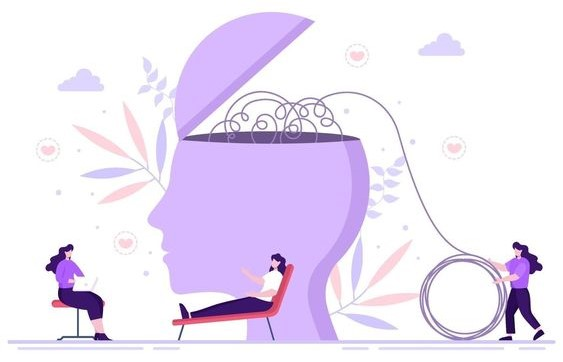

How To Get Mental Health Help
If you or someone you know has a mental health problem, there are ways to get help. Studies show that most people with mental health problems get better and many recover completely.
People often don't get the mental health help they need because they don't know where to start. Use these resources to find the help you, your friends, or family need.
Who can I turn to?
There are lots of options for support out there, although you might find some are more suitable for you, or more easily available. There's no wrong order to try things in - different things work for different people at different times.
- Your doctor (GP)
- A trained therapist
- Friends, family, carers and neighbours
- Charity and third sector organisations
- Peer support
- Student services
- Workplace support
For more information visit:
- Seeking help for a mental health problem
- Suicide & Crisis Lifeline
- Mental health services
- Mental Health - Get help
What if I'm finding it difficult to seek help?
Seeking help isn't always easy, especially when you're not feeling well. It can take time and may not be straightforward. But it's important to remember that you're not alone, and that you deserve support.